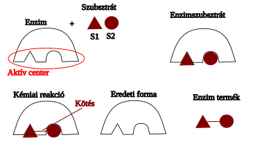

Sejt
Állati:
Növényi:
Enzimek
Biokatalizátorok -> gyorsítják a folyamatokat
Az enzimek fehérjék, ezért speciálisak, az aktiválási időt serkentik.
Fontos része az aktív centrum

Állati:
Növényi:
Biokatalizátorok -> gyorsítják a folyamatokat
Az enzimek fehérjék, ezért speciálisak, az aktiválási időt serkentik.
Fontos része az aktív centrum
